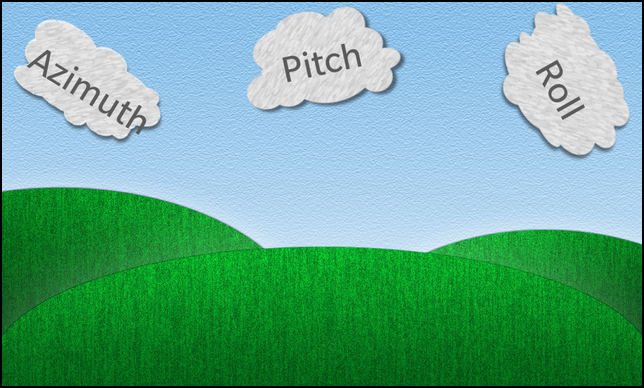
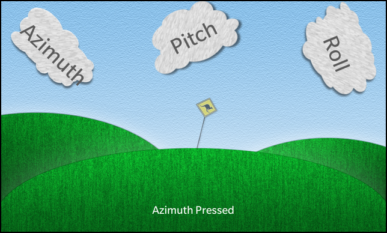

Files:
The Bps to qml example demonstrates how to expose bps events to qml, by requesting events for various modules that you want to listen in on and emitting module specific signals when the event arrives in order to notify the qml context of it. This allows the qml side decide how it wants to act based on the data provided by the signal; this, more closely follows the MVC pattern of design.


In this example we'll learn how to use the Bps api to register and request BPS events of the specified domain on the current thread. As a side effect, we will learn how to read the various sensors that are available to us using the Bps api as well. The various modules are registered as types with the qml, once we import the package that they are registered under, we can use them in the same manner as the core qml elements without any distinction distinction.
The UI of this sample application consists of Images depicting the background scene (hilltops, sky, etc), custom components such as, allert sign and status bar for visual communication of events and custom buttons in the shape of clouds.
After startup the main page (implemented in main.qml) is shown, which contains a variety of custom components to represent the various Bps events.
/* * This entire block of code initializes the BlackBerry Platform Services (BPS) * Monitor (BPSMonitor) class written in C++ and registers the sensors for which * we would like to receive events */ BPSMonitor { id: bpsMonitor //Receive events when the Azimuth Pitch and Roll change azimuthPitchRollService: AzimuthPitchRollService { onAzimuthPitchRollData: { cloud3.rotationZ = roll cloud2.rotationZ = pitch cloud1.rotationZ = azimuth } } //Receive events when the ambient light around the device changes lightService: LightService { id: lightService onIlluminanceData: { if (illuminance == 0) { alertSign.opacity = 1; } else { // This calculation is a bit ugly but it gives a linear scale when // simulating illuminance changes from controller.exe. It may be best // to remove this when testing with a real device. var logIlluminance = 1 - Math.pow(illuminance, 1 / 5) / 9.177; // Set the opacity of the AlertSign to reflect the amount of light // the device is currently receiving alertSign.opacity = logIlluminance; } } } //Receive events when the keyboard becomes visible or hides virtualKeyboardService: VirtualKeyboardService { id: virtualKeyboardService // Swipe from the bottom-left bezel towards the center of the // screen to force the keyboard to be visible onKeyboardVisible: { statusBar.translationY = 768 - statusBar.preferredHeight - 300 statusBar.setText("Keyboard Visible"); } // Press the hide keyboard button on the keyboard to hide it onKeyboardHidden: { statusBar.translationY = 768 - statusBar.preferredHeight statusBar.setText("Keyboard Hidden"); } } //Receive events when the device changes locations geolocationService: GeolocationService { id: geolocationService period: 20 //Receive updates every 20 seconds onLocationUpdate: { statusBar.setText("Location Update: " + latitude + ", " + longitude); } } //Receive events when the device proximity sensor registers that the device // has entered close proximity of another object or exited proximityService: ProximityService { id: proximityService property int proximityVal: 1 onProximityData: { if (proximity != proximityVal) { proximityVal = proximity; if (proximityVal == 0) { statusBar.setText("I need some space!"); } else { statusBar.setText("Space received, thank-you"); } } } } }
The BPSMonitor component initializes the BlackBerry Platform Services (BPS), it is written in c++ and registers the various sensors for which we would like to receive events for. In order to receive events it initializes BPSEventHandler which subclasses AbstractBpsEventHandler that allows us to receive the Bps events.
//Receive events when the Azimuth Pitch and Roll change azimuthPitchRollService: AzimuthPitchRollService { onAzimuthPitchRollData: { cloud3.rotationZ = roll cloud2.rotationZ = pitch cloud1.rotationZ = azimuth } }
This is the custom component that represents the azimuth,pitch and roll sensor, allowing us to act upon receiving the bps events in regard to this sensor. This custom component manipulates the cloud buttons by adjusting their rotationZ property for each azimuth, roll, pitch value.
//Receive events when the ambient light around the device changes lightService: LightService { id: lightService onIlluminanceData: { if (illuminance == 0) { alertSign.opacity = 1; } else { // This calculation is a bit ugly but it gives a linear scale when // simulating illuminance changes from controller.exe. It may be best // to remove this when testing with a real device. var logIlluminance = 1 - Math.pow(illuminance, 1 / 5) / 9.177; // Set the opacity of the AlertSign to reflect the amount of light // the device is currently receiving alertSign.opacity = logIlluminance; } } }
The LightService component, as the name implies, generates signals from Bps events with illuminance values, which we in turn use to change the allert sign Container opacity property.
//Receive events when the keyboard becomes visible or hides virtualKeyboardService: VirtualKeyboardService { id: virtualKeyboardService // Swipe from the bottom-left bezel towards the center of the // screen to force the keyboard to be visible onKeyboardVisible: { statusBar.translationY = 768 - statusBar.preferredHeight - 300 statusBar.setText("Keyboard Visible"); } // Press the hide keyboard button on the keyboard to hide it onKeyboardHidden: { statusBar.translationY = 768 - statusBar.preferredHeight statusBar.setText("Keyboard Hidden"); } }
The VirtualKeyboardService listens for keyboard visible and hidden bps events, once an event happens it notifies the qml context via the onKeyboardVisible and onKeyboardHidden signals. This in turn changes the status bar position by positioning it to the new coordinate along the y axis.
//Receive events when the device changes locations geolocationService: GeolocationService { id: geolocationService period: 20 //Receive updates every 20 seconds onLocationUpdate: { statusBar.setText("Location Update: " + latitude + ", " + longitude); } }
The GeolocationService component notifies the user with location info by updating the status bar with latitude/longitude coordinates when the location service is activated and GEOLOCATION_INFO Bps events are received.
//Receive events when the device proximity sensor registers that the device // has entered close proximity of another object or exited proximityService: ProximityService { id: proximityService property int proximityVal: 1 onProximityData: { if (proximity != proximityVal) { proximityVal = proximity; if (proximityVal == 0) { statusBar.setText("I need some space!"); } else { statusBar.setText("Space received, thank-you"); } } } }
The ProximityService component initializes the proximity sensor, and waits on proximity readings via the bps events. Upon receiving proximity readings it provides the qml context with proximity data by generating onProximityData signals. In turn we change the status bar with a meaningful message depending on the reading we get.
AlertSign { id: alertSign }
The AlertSign component is used as a visual indicator that the Azimuth button has been pressed in order to activate(visible) sign, and by pressing the Pitch button the sign is deactivated(hidden). It's also used to indicate light sensor value by changing the components opacity property value.
Container { preferredHeight: 350 preferredWidth: 1280 layout: DockLayout { } // Add 3 buttons to the screen, take a look at the onSelected functions // to see what happens when these are selected. Container { id: cloud1 CloudButton { imageSource: "asset:///images/Cloud1.png" shadowImageSource: "asset:///images/Cloud1_shadow.png" text: "Azimuth" onSelected: { alertSign.activate() statusBar.setText("Azimuth Pressed") } } rotationZ: -10.0 translationX: 19.0 horizontalAlignment: HorizontalAlignment.Left verticalAlignment: VerticalAlignment.Center } CloudButton { id: cloud2 imageSource: "asset:///images/Cloud2.png" shadowImageSource: "asset:///images/Cloud2_shadow.png" text: "Pitch" rotationZ: 1.0 translationY: 13.0 onSelected: { alertSign.deactivate() statusBar.setText("Pitch Pressed") } horizontalAlignment: HorizontalAlignment.Center verticalAlignment: VerticalAlignment.Top } Container { id: cloud3 CloudButton { imageSource: "asset:///images/Cloud3.png" shadowImageSource: "asset:///images/Cloud3_shadow.png" text: "Roll" onSelected: { statusBar.setText("Roll Pressed") } } rotationZ: 28.0 horizontalAlignment: HorizontalAlignment.Right verticalAlignment: VerticalAlignment.Center } }
These are the custom buttons represented as clouds, each one changes the status bar to it's name in order to differentiate which one was pressed , also some will have special functions like enabling or disabling the alert sign visibility. The animations of the buttons are created by changing their rotationZ property in accordance with the AzimuthPitchRollService sensor values.
// The StatusBar will display some text notifications to the end user StatusBar { id: statusBar preferredHeight: 150 preferredWidth: 1280 translationY: 768 - statusBar.preferredHeight }
This is the StatusBar custom component that is used by the other custom components/sensors to relay information back to the user such as, which button has been pressed, the proximity data or even geolocation latitude/longitude coordinates.
The BPSMonitor class is the central class in this application. It initializes BPSEventHandler, which creates the bridge between Bps events and the various sensor components, this allows for the components to act upon the events and generate signals to inform the qml context, which in turn allows us to wow you with animations.
class BPSMonitor: public QObject { Q_OBJECT Q_PROPERTY(bb::cascades::bps::VirtualKeyboardService* virtualKeyboardService READ virtualKeyboardService WRITE setVirtualKeyboardService) Q_PROPERTY(bb::cascades::bps::GeolocationService* geolocationService READ geolocationService WRITE setGeolocationService) Q_PROPERTY(bb::cascades::bps::AccelerometerService* accelerometerService READ accelerometerService WRITE setAccelerometerService) Q_PROPERTY(bb::cascades::bps::MagnetometerService* magnetometerService READ magnetometerService WRITE setMagnetometerService) Q_PROPERTY(bb::cascades::bps::ProximityService* proximityService READ proximityService WRITE setProximityService) Q_PROPERTY(bb::cascades::bps::AzimuthPitchRollService* azimuthPitchRollService READ azimuthPitchRollService WRITE setAzimuthPitchRollService) Q_PROPERTY(bb::cascades::bps::LightService* lightService READ lightService WRITE setLightService) public: explicit BPSMonitor(QObject *parent = 0); ~BPSMonitor(); VirtualKeyboardService *virtualKeyboardService(); void setVirtualKeyboardService(VirtualKeyboardService *service); GeolocationService *geolocationService(); void setGeolocationService(GeolocationService *service); AccelerometerService *accelerometerService(); void setAccelerometerService(AccelerometerService *service); MagnetometerService *magnetometerService(); void setMagnetometerService(MagnetometerService *service); ProximityService *proximityService(); void setProximityService(ProximityService *service); AzimuthPitchRollService *azimuthPitchRollService(); void setAzimuthPitchRollService(AzimuthPitchRollService *service); LightService *lightService(); void setLightService(LightService *service); private: BPSEventHandler *m_bpsEventHandler; VirtualKeyboardService *m_virtualKeyboardService; GeolocationService *m_geolocationService; AccelerometerService *m_accelerometerService; MagnetometerService *m_magnetometerService; ProximityService *m_proximityService; AzimuthPitchRollService *m_azimuthPitchRollService; LightService *m_lightService; };
Inside the constructor the other business logic objects are instantiated, the most important being the BPSEventHandler, which is responsible for propegating the bps events to all the sensor components that are listening on them and generating signals based on the event data.
BPSMonitor::BPSMonitor(QObject *parent) : QObject(parent) , m_bpsEventHandler(new BPSEventHandler()) , m_virtualKeyboardService(0) , m_geolocationService(0) , m_accelerometerService(0) , m_magnetometerService(0) , m_proximityService(0) , m_azimuthPitchRollService(0) , m_lightService(0) { }
In all the other property accessor methods, we simply set or return the different BlackBerryPlatformService components, which represent the various sensors.
VirtualKeyboardService *BPSMonitor::virtualKeyboardService() { return m_virtualKeyboardService; } void BPSMonitor::setVirtualKeyboardService(VirtualKeyboardService *service) { m_bpsEventHandler->registerService(service); m_virtualKeyboardService = service; }
The BPSEventHandler class contains the business logic for tracking the instantiaded BlackBerryPlatformService, subscribing the sensor domain with the bps event framework and propegating the Bps events to the individual services for further processing.
class BPSEventHandler: public bb::AbstractBpsEventHandler { public: BPSEventHandler(); virtual ~BPSEventHandler(); void setServices(const QList<BlackBerryPlatformService*> &services) { m_services = services; } QList<BlackBerryPlatformService*> &services() { return m_services; } virtual void event(bps_event_t *event); void registerService(BlackBerryPlatformService *service); private: QList<BlackBerryPlatformService*> m_services; };
The registerService() method adds the BlackBerryPlatformService to the list and quries for it's service domain in order to register it for receiving BPS events of the specified domain on the current thread.
void BPSEventHandler::registerService(BlackBerryPlatformService *service) { m_services << service; service->requestEvents(); subscribe(service->eventDomain()); }
The event() method is an implementation of the parent AbstractBpsEventHandler::event() method, which receives the Bps event's when the services domain has been registered and a request for it's events has been made. Upon receiving the event it propegates that event for further processing to the BlackBerryPlatformService.
void BPSEventHandler::event(bps_event_t *event) { if (event != NULL) { // find the proper service object and let it handle the event int domain = bps_event_get_domain(event); for (int i = 0; i < m_services.size(); ++i) { BlackBerryPlatformService *service = m_services.at(i); if (domain == service->eventDomain()) { service->handleEvent(event); } } } }
The BlackBerryPlatformService abstract class(interface) defines the sensor classes common functionality. Leaving them to define handleEvent() behaviour only.
class BlackBerryPlatformService : public QObject { Q_OBJECT public: explicit BlackBerryPlatformService(QObject *parent = 0) : QObject(parent) {} virtual ~BlackBerryPlatformService() {} virtual void requestEvents() = 0; virtual int eventDomain() = 0; virtual void handleEvent(bps_event_t *event) = 0; private: Q_DISABLE_COPY(BlackBerryPlatformService) };
The AbstractSensorService class amalgamates the common functionality accross the different services. Defining their functionality as to provide the same behaviour(methods) for all the services that subcalls this class.
class AbstractSensorService: public BlackBerryPlatformService { Q_OBJECT Q_ENUMS(SensorAccuracy) public: /** * The accuracy levels for a sensor reading. */ enum SensorAccuracy { AccuracyUnreliable = 0, AccuracyLow = 1, AccuracyMedium = 2, AccuracyHigh = 3 }; AbstractSensorService(sensor_type_t sensorType, QObject *parent = 0); virtual ~AbstractSensorService(); Q_INVOKABLE bool isSupported(); Q_INVOKABLE void setCalibrationEnabled(bool calibrationEnabled); Q_INVOKABLE void setEnableSkipDuplicates(bool enableSkipDuplicates); Q_INVOKABLE void setEventRate(unsigned int rate); Q_INVOKABLE void setBackgroundEnabled(bool backgroundEnabled); virtual void requestEvents(); virtual int eventDomain(); protected: SensorAccuracy getAccuracy(bps_event_t *event); unsigned long long getTimestamp(bps_event_t *event); private: sensor_type_t m_sensorType; bool m_calibrationEnabled; bool m_calibrationEnabledSet; bool m_enableSkipDuplicates; bool m_enableSkipDuplicatesSet; unsigned int m_rate; bool m_rateSet; bool m_backgroundEnabled; bool m_backgroundEnabledSet; };
The constructor initializes all the member variables, one being the sensor type which describes the custom sensor component it represents.
AbstractSensorService::AbstractSensorService(sensor_type_t sensorType, QObject *parent) : BlackBerryPlatformService(parent) , m_sensorType(sensorType) { }
The following methods represent the common functionality accross the various sensor service components such as, enabling callibration, running in the background, setting the sensor rate or retrieving that sensors domain, which is important in order to subscribe the service for receiving bps events.
bool AbstractSensorService::isSupported() { return sensor_is_supported(m_sensorType); } void AbstractSensorService::setCalibrationEnabled(bool calibrationEnabled) { m_calibrationEnabled = calibrationEnabled; m_calibrationEnabledSet = true; } void AbstractSensorService::setEnableSkipDuplicates(bool enableSkipDuplicates) { m_enableSkipDuplicates = enableSkipDuplicates; m_enableSkipDuplicatesSet = true; } void AbstractSensorService::setEventRate(unsigned int rate) { m_rate = rate; m_rateSet = true; } void AbstractSensorService::setBackgroundEnabled(bool backgroundEnabled) { m_backgroundEnabled = backgroundEnabled; m_backgroundEnabledSet = true; } int AbstractSensorService::eventDomain() { return sensor_get_domain(); }
The requestEvents() method enables/disables the various settings, that were mentioned above (callibration, data rate, etc), using bps api before making the request to bps for specific domain events. bu
void AbstractSensorService::requestEvents() { if (m_calibrationEnabledSet) sensor_set_calibration(m_sensorType, m_calibrationEnabled); if (m_rateSet) sensor_set_rate(m_sensorType, m_rate); if (m_enableSkipDuplicatesSet) sensor_set_skip_duplicates(m_sensorType, m_enableSkipDuplicates); //if (m_backgroundEnabledSet) sensor_set_background(m_sensorType, m_backgroundEnabled); sensor_request_events(m_sensorType); }
The following are utility(helper) methods to simplify in generating a timestamp for an event, or by retrieving and mapping the bps sensor accuracy enum values to the enum values defined for use in the qml context.
unsigned long long AbstractSensorService::getTimestamp(bps_event_t *event) { //unsigned long long timestamp = sensor_event_get_timestamp(event); unsigned long long timestamp = QDateTime::currentMSecsSinceEpoch(); return timestamp; } AbstractSensorService::SensorAccuracy AbstractSensorService::getAccuracy( bps_event_t *event) { SensorAccuracy accuracy = AccuracyUnreliable; switch (sensor_event_get_accuracy(event)) { case SENSOR_ACCURACY_UNRELIABLE: accuracy = AccuracyUnreliable; break; case SENSOR_ACCURACY_LOW: accuracy = AccuracyLow; break; case SENSOR_ACCURACY_MEDIUM: accuracy = AccuracyMedium; break; case SENSOR_ACCURACY_HIGH: accuracy = AccuracyHigh; break; } return accuracy; }
The sensor services such as, AccelerometerService, VirtualKeyboardService, etc, deal with implementing the BlackBerryPlatformService::handleEvent() method only. The rest of the common methods have been implemented by AbstractSensorService which the services subclass and hence inherit from. Meaning, each of the service classes implements the business logic for dealing with Bps events of the specific service sensor type (i.e. SENSOR_TYPE_ACCELEROMETER).
Let's take a look at AccelerometerService as an example.
class AccelerometerService : public AbstractSensorService { Q_OBJECT public: AccelerometerService(QObject *parent = 0); virtual ~AccelerometerService(); virtual void handleEvent(bps_event_t *event); Q_SIGNALS: /** * @brief Emitted when accelerometer data is available. * * @details The accelerometer measures the acceleration on each axis. * * @param x Acceleration minus Gx on the x-axis, in SI units (m/s^2) * @param y Acceleration minus Gy on the y-axis, in SI units (m/s^2) * @param z Acceleration minus Gz on the z-axis, in SI units (m/s^2) * @param timestamp A monotonic timestamp (not date/time) that can be used to synchronize and/or * fuse different sensor events. * @param accuracy The accuracy of the sensor reading. * * @return None. */ void accelerometerData(float x, float y, float z, unsigned long long timestamp, SensorAccuracy accuracy); };
The constructor for these services typically initializes its member variables and most importantly sets the sensor type that it is representing. Many of the Bps functions that are invoked depend on this type in order to achieve the result that is tied to the specific sensor it represents.
AccelerometerService::AccelerometerService(QObject *parent) : AbstractSensorService(SENSOR_TYPE_ACCELEROMETER, parent) { }
The handleEvent() method contains all the business logic for dealing with the sensor specific event, disseminating its data and emitting a signal with the pieces of data that you want to expose to the qml context.
void AccelerometerService::handleEvent(bps_event_t *event) { uint16_t code = bps_event_get_code(event); if (code == SENSOR_ACCELEROMETER_READING) { float x, y, z; sensor_event_get_xyz(event, &x, &y, &z); unsigned long long timestamp = getTimestamp(event); SensorAccuracy accuracy = getAccuracy(event); Q_EMIT accelerometerData(x, y, z, timestamp, accuracy); } }
The above mentioned service structure, using AccelerometerService as an example is used accross all the various sensor service classes implemented in this sample. The reason this is simplified is because the functional commonality has been implemented in the AbstractSensorService class which all these services subclass and hence inherit this functionality by default.
The only exception is the GeolocationService which only inherits from BlackBerryPlatformService, because it uses a different api lib other than the core bps sensor api; hence, the common methods like eventDomain(), requestEvents(), etc, have to be re-implemented using that libraries specific api calls.